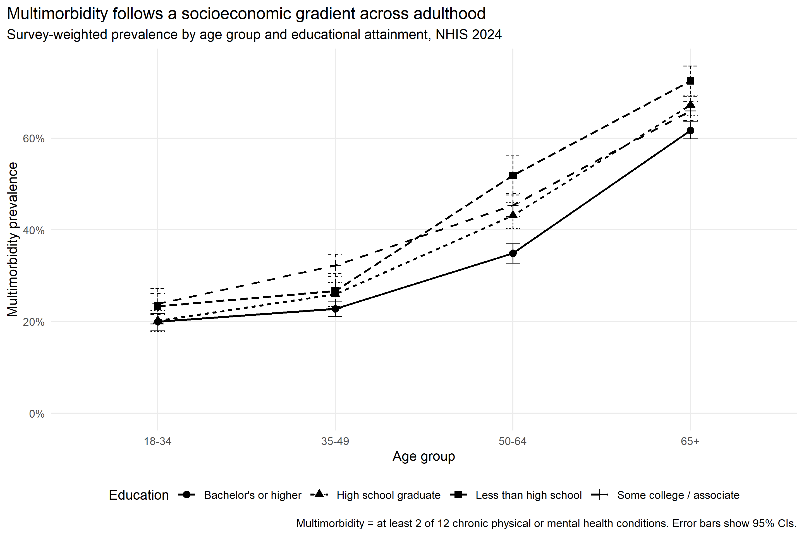

01 / Education × age
Educational inequality was not constant across adulthood.
The joint interaction test was significant: F = 5.06, p < 0.001.

Among adults aged 50–64, estimated prevalence was 51.9% for those with less than high school education and 34.9% for those with a bachelor's degree or higher.